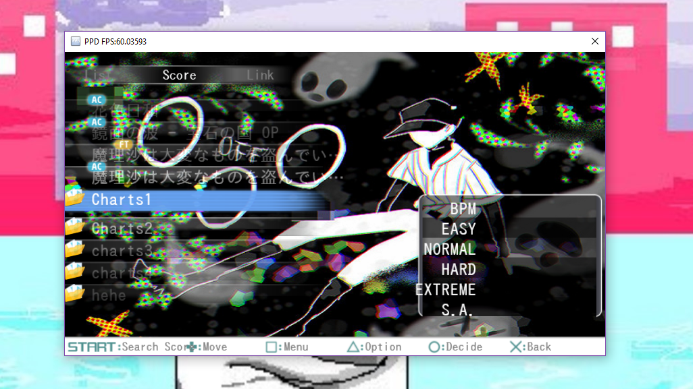

Here is where you'll find miscellaneous tools for PPD.
This includes further customization tutorials, scripting resources, etc.
- Custom PPD Menu Backgrounds Tutorial -
This tutorial will teach you how to have your own custom home screen, song select/result screen, and multiplayer backgrounds!
1. Back up your original background.png and back.png files found in the img/PPD/home, img/PPD/multi, and img/PPD/single folders. This is just in case you run into any errors!
2. Find the image/images you want to use for backgrounds. Then, open the pictures one at a time in paint or any other editing program.
3. Click the resize button at the top. A little box will pop up. First, click the pixels tab and uncheck 'Maintain aspect ratio.' Next, change the image dimensions to 800x450: so, change the horizontal value to 800 and the vertical value to 450. Do this for each image.

4. Save the images as a .png and rename them to either background.png or back.png.
5. Open the PPD folder and go into the img folder. Then, open the PPD folder inside the img folder.
6. Open the folders depending on which screen you made custom backgrounds for (home for home screen, multi for multiplayer, single for singleplayer).
7. Replace the old background.png and back.png images with your new ones.
You now have custom PPD menu backgrounds!
This guide was originally made by Maddie (PPD's #1 survivor). Thank you, Maddie!